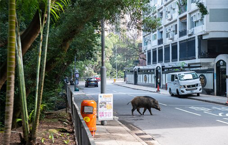
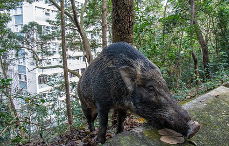
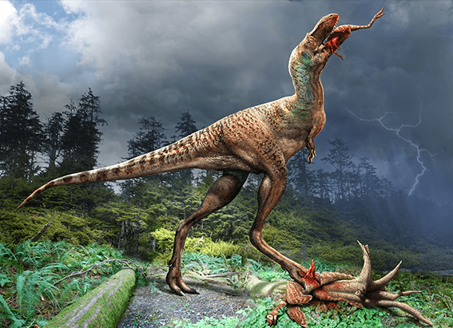
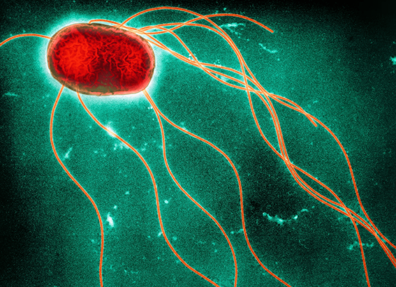

NATIONAL GEOGRAPHIC
Wild boars make a home amid Hong Kong’s high rises and highways
ANIMAL
- 
- 
HONG KONGOn a Wednesday morning in one of Hong Kong’s high-end residential areas, a large wild boar napped peacefully on the side of a road. It was seemingly oblivious to the rush hour traffic whizzing past mere feet away, which caused great offense to local resident Mrs. Kuk. As she snapped pictures on her phone, she said she “always” sees this specific male around: “He’s becoming more and more daring. Look at him sleeping here, as if us humans weren’t even around!” The last time she encountered him, he was digging through trash. She called the police.
The city of 7.3 million isn’t exactly known as a bastion for wildlife; foreigners and locals alike typically see it as jungle of steel and asphalt. But its image belies rich fauna and flora: three-quarters of its land is undeveloped and almost 40 percent is protected, providing a lush habitat for a remarkably high level of biodiversity.
For most of the city’s history, people and wild boars, Hong Kong’s largest native terrestrial animal, coexisted in peace. The animals were either a minor nuisance to villagers, or they were a rare, lucky sighting for hikers who ventured out into country parks at dawn or dusk. But in the past five years, something’s changed: they seem to be everywhere.
In 2018, Hong Kong received a record number of complaints about the wild boar: 929, more than triple the number just five years prior. Most are made by frightened citizens who don’t know what to do during an encounter. Others require police intervention, for instance when the animals wander into urban areas and can’t find their way back to the forest. In some rare cases, people have gotten minor injuries from bites and being charged.
To deal with the problem, the department of agriculture has a six-person team dedicated to responding to complaints and figuring out solutions, which the government plans on tripling in size by the end of 2019. For this fiscal year alone, it’s allocated almost $450,000 to the problem.
There aren’t any estimates for how many wild boars there are in Hong Kong, but with no natural predators in the area and continuous sources of human food, it’s clear the pigs’ population has become an issue. The wild boar (Sus scrofa), also known as the Eurasian wild pig, is a highly adaptable omnivore that can weigh anywhere from 150 to 600 pounds. These mammals’ range extends as far west as Marrakech and as far east as Brisbane, making it one of the most widely distributed mammals in the world. They’ve also been introduced to the Americas, where they’re considered pests.
With such a wide range, it’s no surprise that Hong Kong authorities aren’t alone in having to manage urban boars. Barcelona and Brussels have their own ongoing pig struggles, for example. But Hong Kong is special in two regards. Firstly, with the city’s towering skyscrapers built along the flanks of forest-covered mountains, the boars easily venture into hyper-urban environments, like in between apartment buildings or even inside malls. Secondly, people won’t stop feeding the pigs.
For 35 years, Hong Kong attempted to control the population the same way that many other places have: by hunting them. Two teams of civilian volunteers were given license to shoot and kill the animals, but the government halted the program in 2017. As pig encounters became increasingly common, so did their popularity, making lethal population control methods rather contentious. (A few citizens even formed an organization called the “Hong Kong Wild Boar Concern Group” to advocate against it.) It had become too dangerous anyway, considering the boar’s increasingly urban range.
WHY DID THE BABY BOARS CROSS THE ROAD?
Less than two years ago, the government began experimenting with birth control. Female are shot with tranquilizers, captured, then either given a contraceptive vaccine or sterilized through surgical means. As a final measure, they’re released in more remote areas of Hong Kong.
The wild boar population should eventually diminish in size, but in the meantime, the government has begun an aggressive public education campaign. Illustrated banners featuring anime-style characters have been put up around country parks, warning against feeding, chasing, or taking selfies with the animals.
Comments :
- john Very good
- john Very good
Leave a Reply
Your email address will not be published. Required fields are marked*
Related posts:
-
Dino nuggets ... for dinosaurs A young tyrannosaur’s last meal gives new insight
Juvenile tyrannosaurs selected their meals from the Cretaceous version of the kid’s menu, newly analyzed fossils show. While adult “tyrant lizards” were bone-crushers, capable of hunting large prey and reducing carcasses
View article -
Salmonella can be deadly. Here’s how to protect yourself from it.
Salmonella has struck again. Grocery stores across the United States recalled cantaloupes in early December after discovering that whole and pre-sliced portions of the fruit were responsible for illnesses and two deaths
View article -
800,000 years ago, a huge meteorite hit Earth . Scientists may have just found where.
In 2011 geologist Kerry Sieh and his husband were shopping in Ho Chi Minh City, Vietnam, when they popped into a little jewelry shop to check out the country’s famous rubies and spinels. But once inside
View article